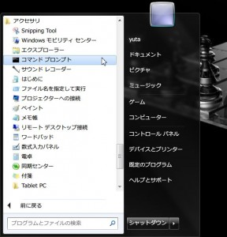
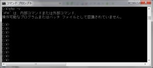
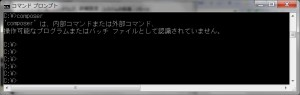

PHP5.5 Windows環境設定手順
1.インストールするもの
2.環境チェック(PHP)
確認項目
・ローカル環境に、phpがインストール済みであるか？
アクセサリから、コマンドプロンプトを実行して下さい。

コマンドプロンプト上で、「php -v」と実行して下さい。

このような表示がされた方は、PHPのインストールを行って下さい。
3.php5.5のインストール
-
PHPインストール用zipファイルをデスクトップにコピーして、zipファイルを展開して下さい。
※Apacheのモジュールとして使う場合は、スレッドセーフ版をインストールしてください。 - 展開されたフォルダを、Cドライブ直下にコピーして、名前を「PHP55」にリネームして下さい。(C:\PHP55)
4.環境チェック(composer)
確認項目
・ローカル環境に、composerがインストールされているか？
コマンドプロンプト上で、「composer」を実行して下さい。

このような表示がされた方は、composerのインストールを行って下さい。
5.composerのインストール
- Composerインストール用ファイルをローカルに保存し、実行して下さい。 ※全て、デフォルトのまま進めてOKです。